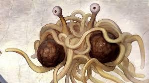

Home
Spaghetti Bolognese

Mince, Pasta, DELICIOUS
Spaghetti Bolognese is a traditional Indian dish. Originating from mainland China, this simple meal has fed millions of University students for a millenia.
Ingredients
- Pasta - 500g
- Beef Mince - 350g
- Lamb Mince - 350g
- Onion - 1 whole
- Garlic - 3 Cloves
- Tomatoes - 1 Can (Diced)
- Jar Sauce - 1 Jar
But How Do I Make It!?
- Dice your Onion and Garlic
- Bring a saucepan to a medium heat and drizzle with Olive Oil
- Cook your onion and Garlic together until it smells DELICIOUS
- While your onion is sauteeing, bring 5 litres of water to boil in a large pot - This may take a while, we will not add our pasta until the sauce is ready
- Once the onion is smelling DELICIOUS, add our mince and cook until browned.
- At this stage, you can add your tin of diced tomatoes and cook for 1 minute. After that, add the jar sauce
- Bring heat to low and simmer the sauce with herbs and spices of your choosing.
- While the sauce is simmering, add your pasta to the now boiled water and cook for 10 - 12 minutes or until Al Dente
- Serve in a large bowl
- ENJOY!